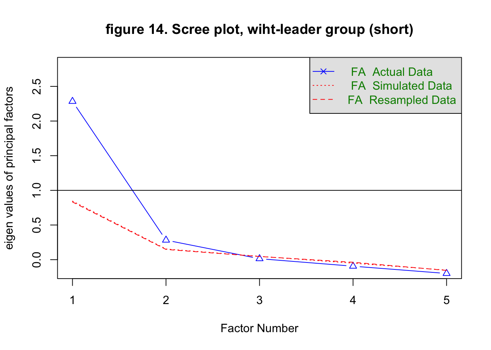
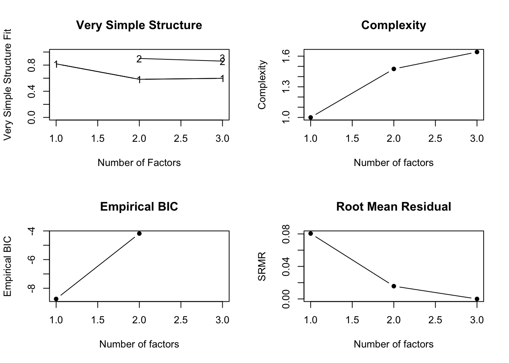
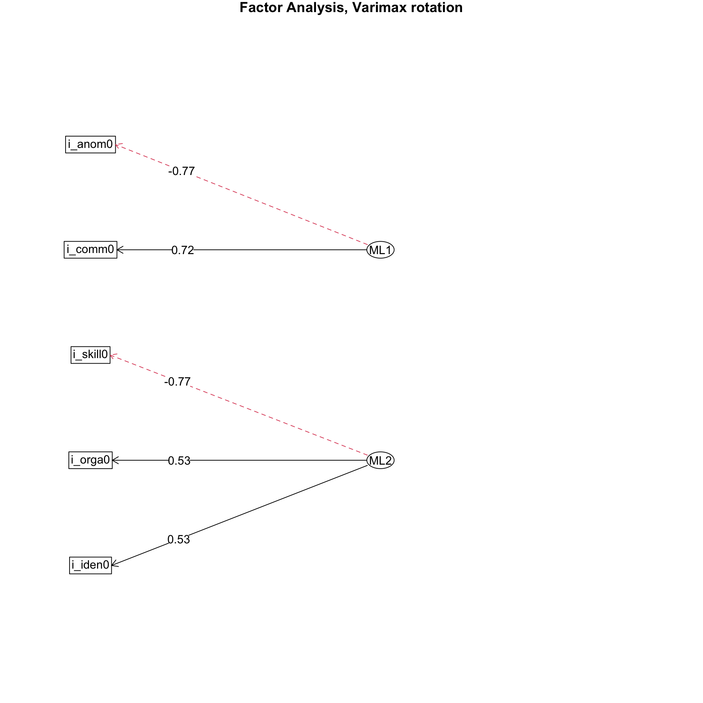
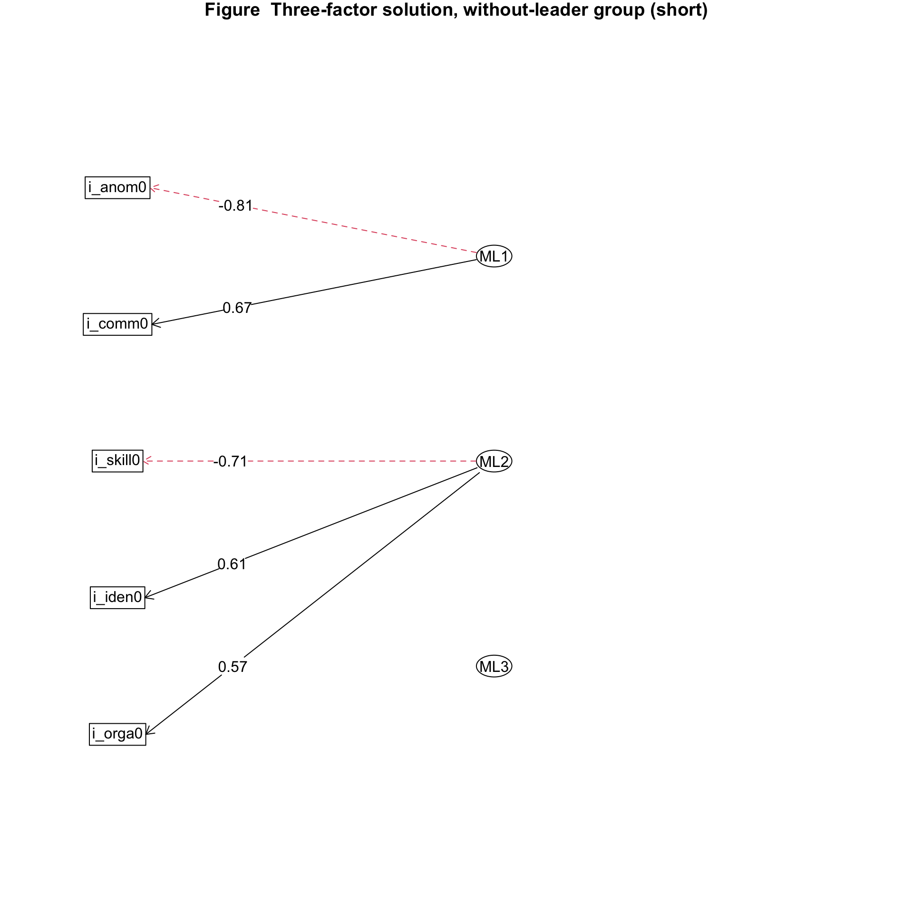

7.2 Explore number of factors

## Parallel analysis suggests that the number of factors = 2 and the number of components = NA
##
## Number of factors
## Call: vss(x = x, n = n, rotate = rotate, diagonal = diagonal, fm = fm,
## n.obs = n.obs, plot = FALSE, title = title, use = use, cor = cor)
## VSS complexity 1 achieves a maximimum of 0.82 with 1 factors
## VSS complexity 2 achieves a maximimum of 0.9 with 2 factors
## The Velicer MAP achieves a minimum of 0.09 with 1 factors
## Empirical BIC achieves a minimum of -8.74 with 1 factors
## Sample Size adjusted BIC achieves a minimum of -0.09 with 2 factors
##
## Statistics by number of factors
## vss1 vss2 map dof chisq prob sqresid fit RMSEA BIC SABIC complex
## 1 0.82 0.00 0.09 5 2.0e+01 0.0012 1.67 0.82 0.161 -3.8 12.043 1.0
## 2 0.58 0.90 0.18 1 1.5e+00 0.2202 0.91 0.90 0.065 -3.3 -0.089 1.5
## 3 0.60 0.86 0.40 -2 5.8e-12 NA 0.80 0.91 NA NA NA 1.6
## eChisq SRMR eCRMS eBIC
## 1 1.5e+01 8.0e-02 0.11 -8.7
## 2 5.7e-01 1.6e-02 0.05 -4.2
## 3 2.5e-12 3.3e-08 NA NA7.2.1 Explore 2-factor solution
| Item | ML1 | ML2 |
|---|---|---|
| i_skill0 | -0.767 | |
| i_orga0 | 0.527 | 0.535 |
| i_comm0 | 0.721 | |
| i_iden0 | 0.485 | 0.526 |
| i_anom0 | -0.771 |
s ### Explore 3-factor solution
| Item | ML1 | ML2 | ML3 |
|---|---|---|---|
| i_skill0 | -0.707 | ||
| i_orga0 | 0.444 | 0.572 | |
| i_comm0 | 0.672 | 0.305 | 0.347 |
| i_iden0 | 0.452 | 0.613 | |
| i_anom0 | -0.806 |